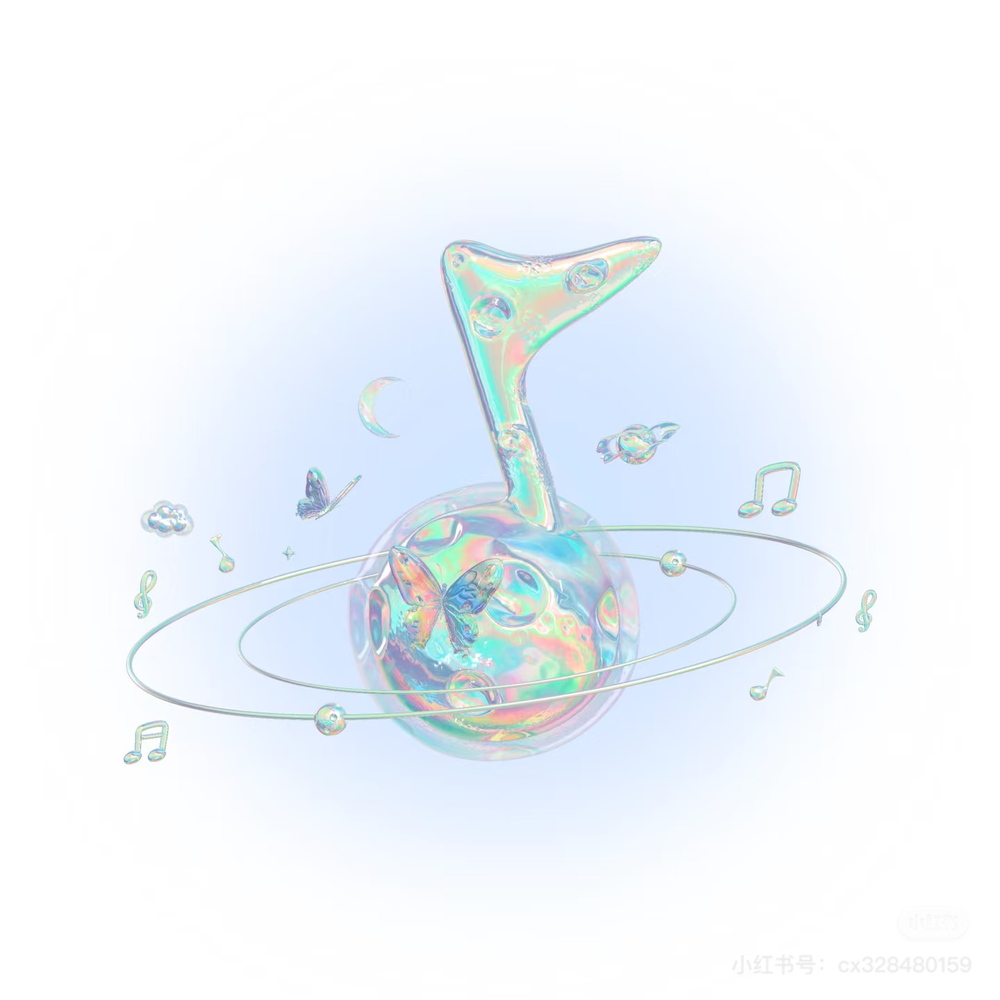
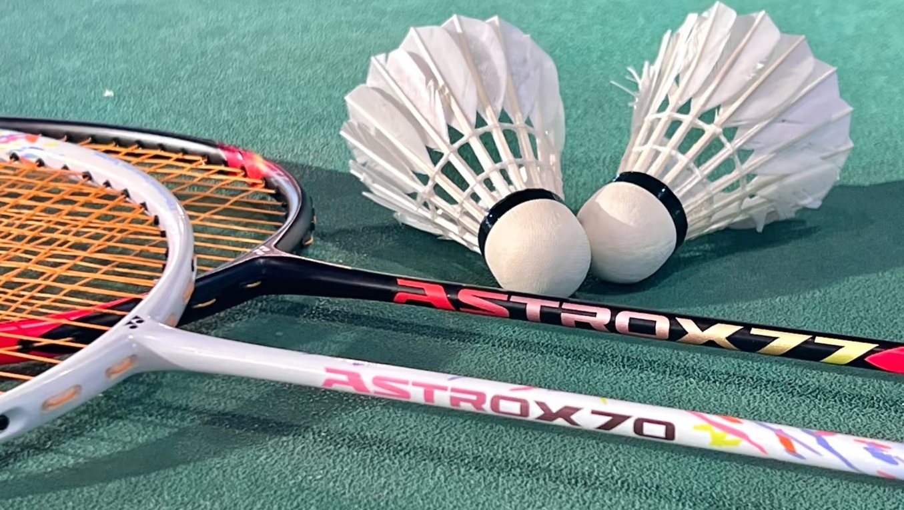

我的兴趣爱好

听音乐
喜欢听各种风格的音乐，尤其是民谣和轻音乐。音乐能让我放松心情，获得创作灵感。闲暇时也会学习一些乐器。
看电影
热爱观看各类电影，特别是纪录片和文艺片。通过电影了解不同的人生故事，感受独特的艺术魅力。经常和朋友一起探讨剧情。

美食探索
喜欢探索各种美食，尤其是地方特色小吃。不仅享受美食带来的味觉体验，也喜欢了解美食背后的文化故事。偶尔也会尝试自己下厨。

户外运动
热爱徒步、爬山等户外活动。在运动中释放压力，亲近自然，同时也能锻炼身体。经常和同学一起参加户外探索活动。